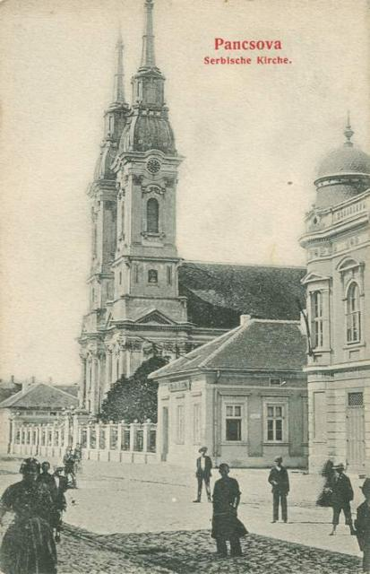

Историја Панчева
Средњи век
У средњем веку Панчево је припадало ковинској жупанији.
Хабзбуршка монархија
Тамишки банат
Панчево 1718. године
Аустријски гроф Клаудије Флоримунд Мерси 1716. године ослобађа Панчево од владавине Турака и тада му даје име Чомва. Потписивањем Пожаревачког мира 1718. године између Османског царства са једне и Хабзбуршке монархије и Венеције са друге стране, формира се хабзбуршка покрајина Тамишки Банат. Покрајина је била подељена на 11 дистрикта, главни град покрајине је био Темишвар, а званични језик је био немачки језик.
Панчево је било главно место у једном од дистрикта Тамишког Баната. С'обзиром на ту чињеницу, велики број људи се настанио у Панчеву. Прво су се населили Срби из околине Темишвара 1720. године. Њихове куће од дрвета, које су стајале у неправилним улицама, су се налазиле северно од панчевачке тврђаве, а место у којем су живели су назвали Горња варош.
1722. године је почело насељавање Немаца из Франачке на територије Баната. Немци су добили територију јужно од тврђаве, коју су 1723. године назвали Немачко Панчево (Доња варош). За разлику од кућа из Горње вароши, зидови кућа из Немачког Панчева су се правили од плетара, а кровови од трске.
У овом периоду је Панчево веома напредовало. 1718. године је у Панчеву подигнута солара, док су 1719. године установљења бродарско и поштанско звање. Индустријалац Абрахам Кепиш, Јеврејин из Пожуна, добија дозволу 1722. године да сагради пивару, која је исте године почела са радом. Она и данас представља једну од најстаријих пивара овога краја. Међутим, у овом периоду је Панчево задесило много недаћа. Јак оркан је 26. маја 1733. године направио огромну штету на приватним и државним зградама; почетком јануара 1737. године избила је јака епидемија која је децимирала становништво, а у мају исте године велики пожар је захватио Доњу варош.
Велику штету је Панчево претрпело за време рата између Аустрије и Турске који је трајао годину дана. Ратна узнемиреност је почела у Панчеву 28. септембра 1738. године, када се кроз насеље пронела вест да су Турци код Оршаве прешли Дунав и са великом војском стигли до Нове Паланке и тамо победили цесарску војску. Након четири недеље, Панчево је из стратегијских разлога предат Турцима, који ће владати овом територијом 10 месеци. У том периоду су вођене две битке - у првој бици код Гроцке су Турци изашли као победници, док су у другој бици код Панчево Турци потучени од стране Аустријанаца. Док су се повлачили, Турци су спалили варош и веома оштетили тврђаву. Потписивањем Београдског мира 18. септембра 1739. године званично се завршио рат између Аустрије и Турске. Овим миром је Аустрија била у обавези да поруши све тврђаве на левој обали Дунава, што значи да је исте године почело рушење панчевачке тврђаве. (Почетком септембра 2013. године је у градском парку пронађен гранични камен од тврђаве.
Војна крајина
Да би се очувала гранична територија од упада Турака, кријумчарења и уношења заразних болести из турских крајева, Хабзбуршка монархија је територију Војне крајине проширила и на Банат. Уређење банатске Војне крајине је трајао од 1764. до 1768. године.
Аустроугарска монархија
1848/49 Панчево је много страдало током револуције. 1873. постало је муниципални град. У другој половини тог века почиње у Панчеву у већој мери насељавање Мађара. 8. новембра 1918. ушла је у Панчево српска војска.